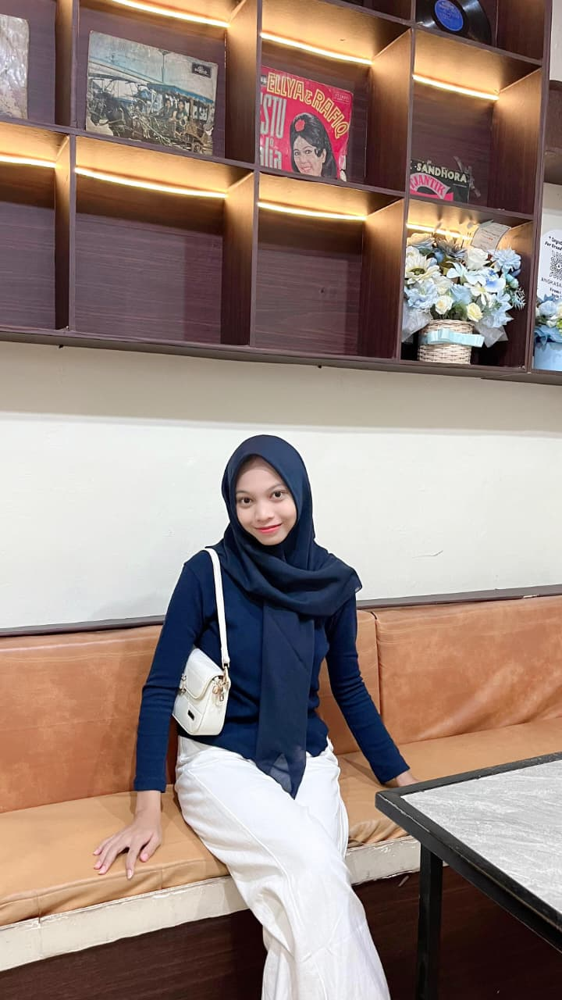

| Nama | Nina Asyifa |
|---|---|
| Tempat, Tanggal Lahir | Kotabumi, 29 Agustus 2007 |
| Umur | 18 Tahun |
| Agama | Islam |
| Anak ke | Bungsu dari 6 bersaudara |
Saya lahir di Kotabumi pada 29 Agustus 2007 dan merupakan anak terakhir dari enam bersaudara. Saat ini saya menempuh pendidikan di SMA Gunung Madu kelas XII dan merupakan alumni SMP Negeri 03 Kotabumi. Saya tinggal di PT Gunung Madu Plantations, Perumahan 4. Hobi saya adalah membaca AU (Alternate Universe), mendengarkan musik, serta membuat makanan kekinian. Saya menyukai warna biru karena memberi kesan tenang, elegan, dan penuh inspirasi.